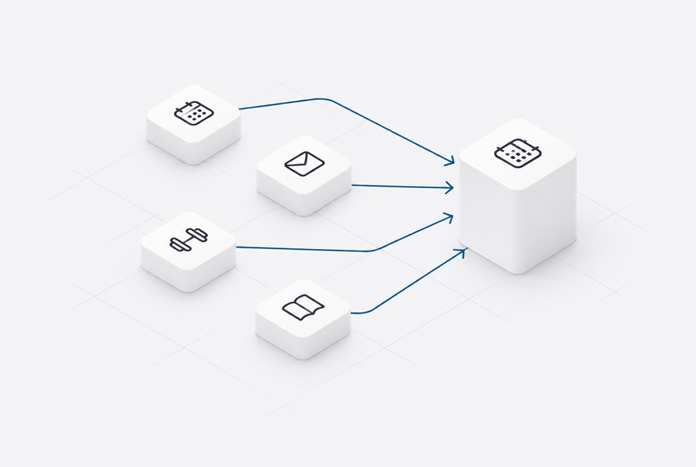

A team of agents that plans my week
Each agent is a folder of rules that configures its own Claude session. A calendar agent plans across ten Google Calendars, an email agent sorts Gmail into four bins and drafts replies but never sends, and training, nutrition and study coaches hand their plans to each other and to the calendar.
Claude Code · Folder-agent pattern · MCP connectors · Cloud routines